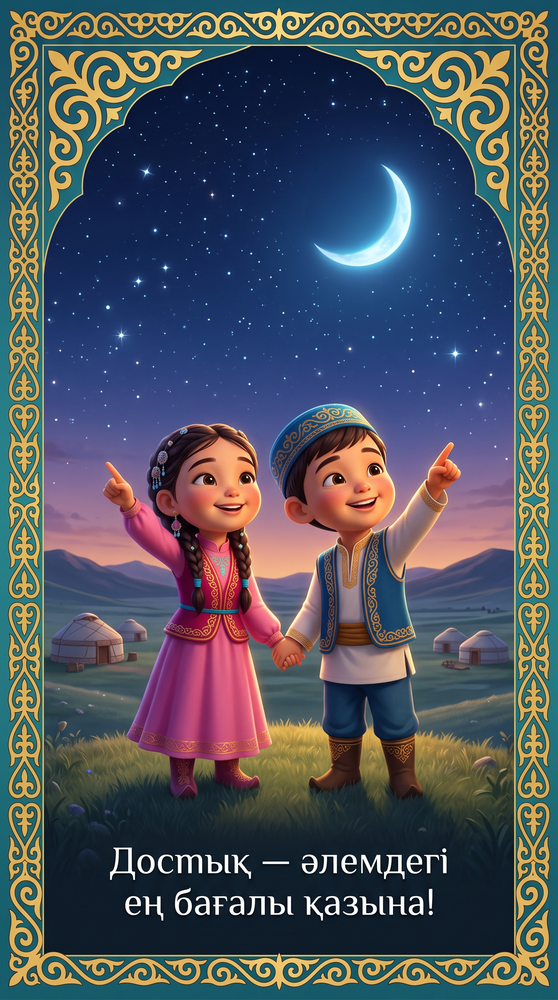
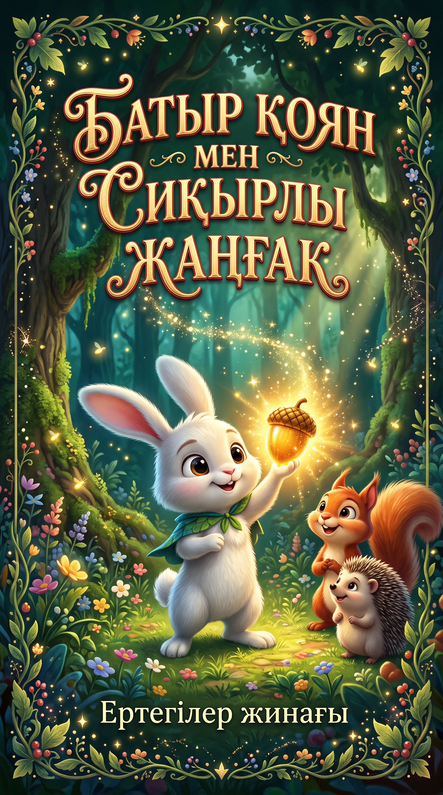
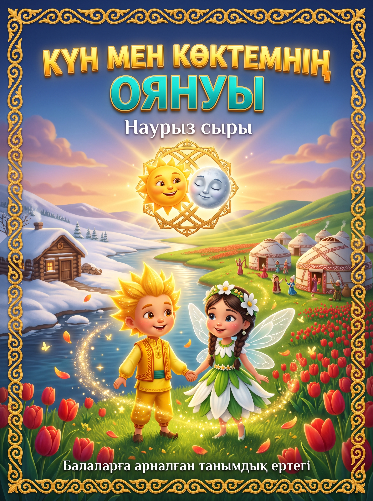
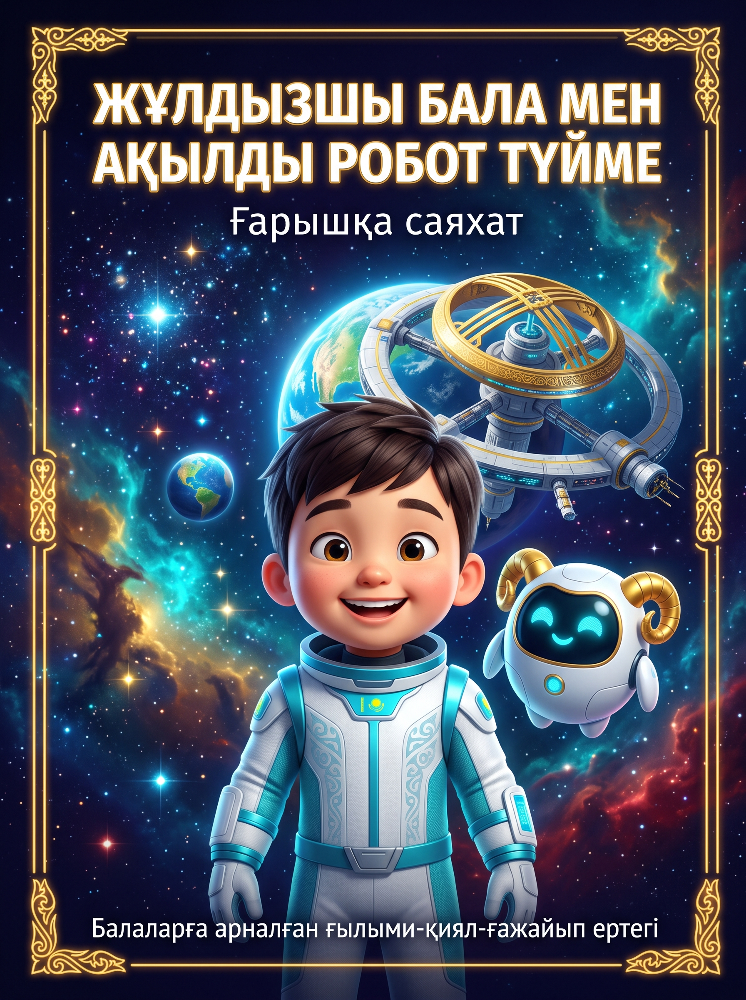
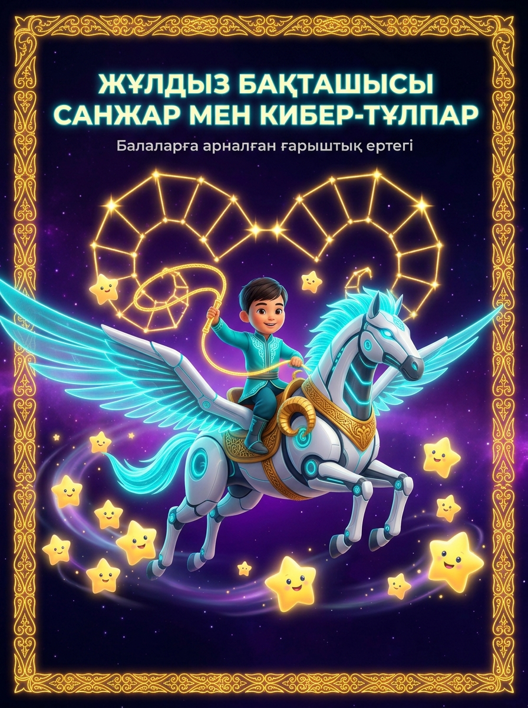
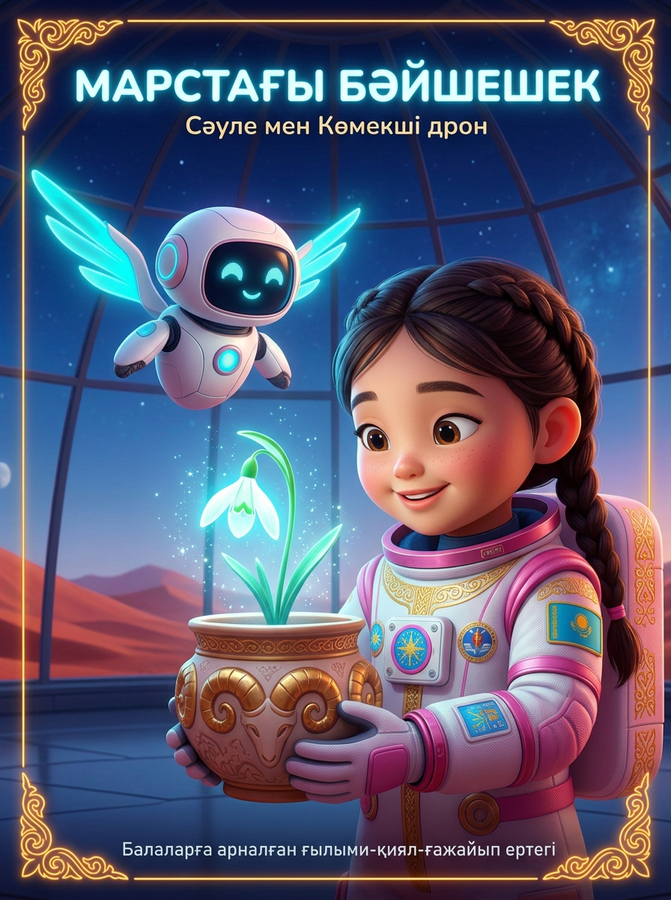
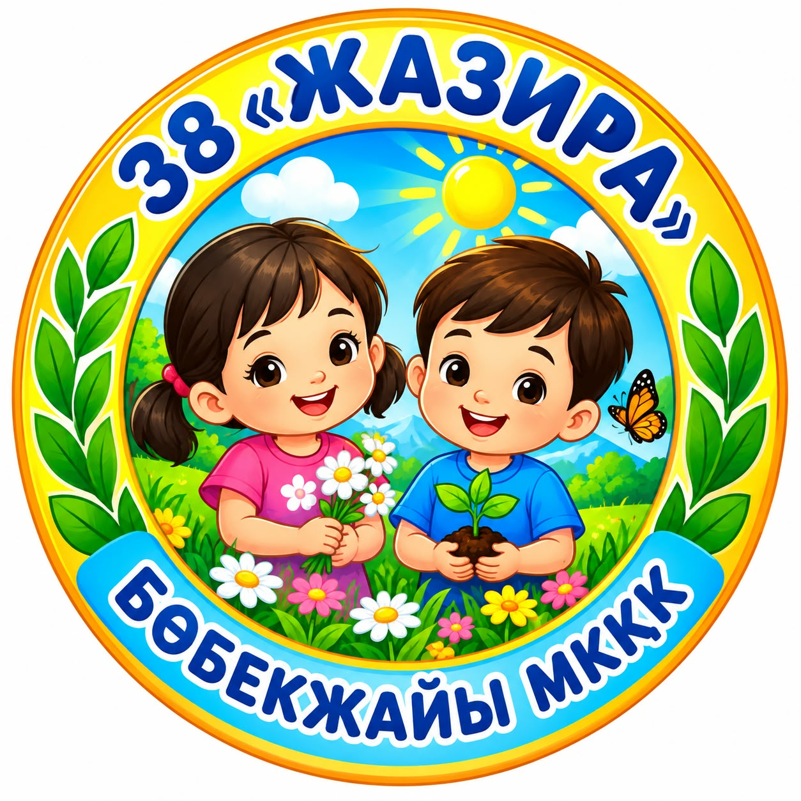

Бас Бет — Жаңалықтар мен Міндеттер
Қазан - Қараша: «Табиғи асық және қол моторикасы»
Осы айда біз табиғи материалдарды (асық, сүйек, ағаш) тазалау, қауіпсіз өңдеу және баланың саусақ моторикасы мен сөйлеу қабілетін дамытуға арналған жаттығуларға басымдық береміз.
«Eco-Ethno Bala» платформасының ашылуы
Ата-аналарға арналған этно-экологиялық платформа ресми түрде іске қосылды.
«Қауіпсіз сүйек» челленджі басталды
Үйде асықтарды табиғи әдіспен қайнатып, тазалау бойынша видео-нұсқаулық жарияланды.
«Үйдегі саусақ массажы» марафоны
Күнделікті 5 минуттық алақан массажы арқылы баланың тілін дамыту бағдарламасы.
Бейне-нұсқаулықтар жинағы
Жұмбақтар, жаңылтпаштар мен баланың тілін дамыту видео-жаттығулары
4 Жұмбақ
1-Жұмбақ: Қалқиып қос құлағы, елеңдеп қорқып тұрады
Баламен бірге видеоны көріп, шешуін табыңыз.
2-Жұмбақ: Кішкентай ғана бойы бар, айналып киген тоны бар. Бұл не?
Баламен бірге видеоны көріп, шешуін табыңыз.
3-Жұмбақ: Қалың киім ұнатады, Шешіндірсең жылатады
Баламен бірге видеоны көріп, шешуін табыңыз.
4-Жұмбақ: Маң-маң басып келеді, Тапырақтап жел еді...
Баламен бірге видеоны көріп, шешуін табыңыз.
4 Жаңылтпаш
1-Жаңылтпаш: «Арба үстінде шөп, шөп үстінде көк.»
Дикция мен тілді жаттықтыру ролигі.
2-Жаңылтпаш: «Тайлақ бота боздайды, ботатай боздайды.»
Тіл сындыру жаттығуы.
3-Жаңылтпаш: «Шопан қазын сойды ма, шаруа малын қойды ма?»
Дыбыстарды анық айту жаттығуы.
4-Жаңылтпаш: «Қара қарға қар үстінде қарқылдады.»
Жылдам сөйлеу дағдысын дамыту.
Баланың тілін шығаруға арналған 5 видео-жаттығу
Артикуляциялық гимнастика, дыбыстарды дұрыс қою және логопедтік ойын жаттығулары
Артикуляциялық жаттығу: Ерін мен тіл моторикасы
Дыбыстарды анық шығаруға арналған бастапқы жаттығулар комплексі.
Тыныс алу жаттығулары мен созылыңқы дыбыстар
Сөйлеу тынысын қалыптастыру және дауысты дыбыстарды дамыту.
Буындарды қайталау арқылы сөйлеуді белсендіру
Ырғақты буындар мен оңай сөз тіркестерін үйрету.
Логопедтік фоносемасиологиялық ойындар
Дыбыс еліктеуіш сөздер арқылы бала тілін жаттықтыру.
Алақан моторикасын сөйлеумен байланыстыру
Саусақ ойындары мен сөйлеу ырғағын біріктіру сабағы.
Ертегілер әлемі
Балаларға арналған 6 интерактивті ертегі және 1 бейне-ертегі

Достық — әлемдегі ең бағалы қазына
Адалдық, мейірімділік пен білімнің күшін түсіндіретін балабақша бүлдіршіндеріне арналған ғажайып ертегі.

Батыл Қоян
Орман жануарларының татулығы мен құпия сандықтың сырын ашатын қызықты балалар ертегісі.

Күн мен көктемнің оянуы
Наурыз мейрамының қалай пайда болғанын сиқырлы кейіпкерлер арқылы түсіндіреді.

ЖҰЛДЫЗШЫ БАЛА
Жұлдыздар, Жер шары мен Айға саяхат жасап, ғарыш құпияларын бірге зерттейік!

САНЖАР ЖӘНЕ КИБЕР-ТҰЛПАР
Ғарыш кеңістігінде кішкентай жұлдыздарды бағып жүрген 6 жасар Санжар мен Кибер-Тұлпардың оқиғасы!

МАРСТАҒЫ БӘЙШЕШЕК
Қызыл ғаламшар Марста бәйшешек өсіріп шығарған балалардың қызықты шытырманы!
Арнайы бейне-ертегі
Баланың есту, көру және қиял қабілетін қатар дамытатын анимацияланған, дауысталған ұлттық видео-ертегі.
Интерактивті ойындар
Ойын батырмасын басқанда жаңа вкладкада ашылады
Этно-Тәрбие Академиясы
Ата-аналарға арналған ғылыми-әдістемелік кеңестер мен практикалық әдеттер
Саусақ моторикасы және сөйлеу
Асықпен немесе табиғи ағаш бөлшектермен массаж жасау арқылы баланың бас миындағы сөйлеу орталығы белсендіріледі. Бұл баланың тіл байлығын артырады.
Эко-әдеттерді үйде қалыптастыру
Пластик ойыншықтарды табиғи өнімдерге алмастыру – баланың сенсорлық сезімталдығын дамытып, табиғатқа деген сүйіспеншілікке баулиды.
Күнделікті 6 эко-әдет (Белгілеп отырыңыз):
ОК платформасы — Ата-ана Челленджі
«Этно-Тәрбие» бағыты бойынша ата-аналар арасында өткізілетін челлендж және белсенді отбасылардың ОК платформасындағы арнайы бейне-нұсқаулығы (Формат 9:16).
Бала дамуын бағалау & Кері байланыс
Жиі қойылатын сұрақтар (FAQ)
Асықты қалай қауіпсіз тазалауға болады?
Асықтарды тұзды суға 30 минут қайнатып, содалы сумен жуып, кептіру керек.
Саусақ массажын қанша уақыт жасаған дұрыс?
Күніне 1-2 рет 3-5 минуттан өткізсе жеткілікті.
Табиғи ойыншықтардың бала саусақ моторикасына қандай пайдасы бар?
Ағаш пен асықтың табиғи фактурасы баланың ұсақ қол бұлшықеттерін шынықтырып, бас миындағы сөйлеу аймақтарын белсендіреді.
Интерактивті рефлексия мен онлайн тесттерге қалай қатысуға болады?
«Интерактив» бөліміндегі батырмаларды басу арқылы викториналар мен ойындарды жаңа вкладкада тегін аша аласыз.
Бұл платформа балабақшамен қалай байланысады?
Ата-аналар чат арқылы сұрақ қойып, баланың үйдегі жетістіктері мен эко-әдеттерін тәрбиешімен бөлісе алады.
